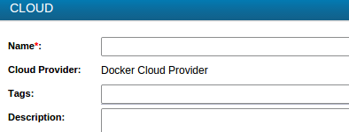

-
Log on, and click Infrastructure Operations.
-
Click the Infrastructure view.
-
On the Actions ribbon, click Add
Cloud.
-
Select a specific cloud vendor, and click OK.
-
Enter the cloud's name and description:
Tip: To assign PLACEHOLDER, enter a value in the
Tags field.

Your cloud is added to the list of clouds.
Note: To narrow down the number of items
displayed, for example, in the Clouds pane, you can add a filter: right-click a
cloud, click Add to filter on the shortcut menu, then, in the
Filters pane, select the check-box next to the cloud's name, and click the
Enable filter thumbtack (). If a
filter's name is displayed as dimmed and grayed out, then the filter's specific
item, e.g. a cloud or space, is unavailable within the view you selected.